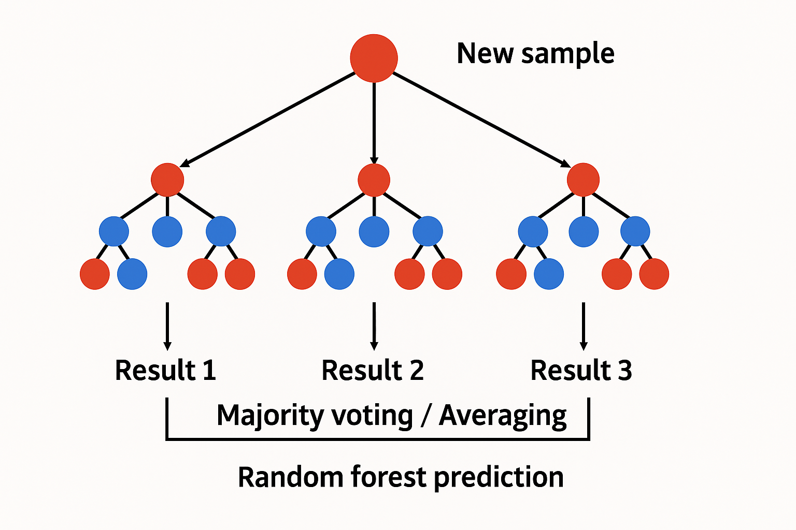

My professional Background
- First internship in Marketing-Communication at APEM near Toulouse, France. (4 months)
- work with generative AI.
- SEO/SEA
- work with performance data from the communication sector.
- Second internship as a intern in Data Analysis at ITT360 in Germany. (6 months)
- Complete project to set up a dynamic Forecast dashboard.
- Working with a tremendous Databank of 252 000 rows.
- Processing context analysis, data cleaning, classification of clients and series and decision making.
- Creation of piplines and dashboards to showcase meaningful insights thanks to Power BI.
- Setting up Machine Learning models with problems of Regression.
(Python with powerful packages such as xgboost, tensorflow and scikit-learn)
Want to find out more about myself and my experiences ? Check out my LinkedIn Profil
Why this Portfolio ?
As you may know, Data science is a very vast domain combining mathematics, statistics, Data Analysis, Machine Learning and Deep Learning.
It is not an easy task to navigate blindly, and the chances of getting lost along the way are high.
I would like this portfolio to alleviate this problem and serve as a guide as I progress in my career in Data Science.
Indeed, in this portfolio I'm willing to share the projects I'm undertaking in Data Science, my way of working and how I operate.
This portfolio is obviously not meant to be perfect but to be a tool to progress by practice.
Moreover, as I already created once a website in the markup language html and the style sheet css for a course project, I was enthousiast to build my own web project and strenghten my basics in both html and css.
My Enthousiasm about Datascience
While I developped an analytical mind in mathematics classes during my preparatory class, I always missed the purpose of what I was learning. Indeed, the subjects covered, while being extremely interesting, did not have any direct domains of application for myself. Arriving in Neoma BS, I discovered a Multivariate Data Approch thanks to my courses. I started questionning myself about the mathematics concepts I already knew and discovered mathematics applications through Data Science during my internship at ITT360 GmbH in Germany. This domain instantly captivated me for its flexibility in the ways of resolving problems, analysing datas, treating datas, and modelling models. The possibilities are infinite. Moreover, I find this field fascinating for its domain diversity which I explained above.
In the following field, you will find a selection of personnal projects I carried out. This selection is meant to evolve as my career in this filed also evolves. In each project, you will always find an article with snippets of code integrated, in which I analyse the situation, do the pre processing and explain the way I'm resolving the project. The Jupyter Notebook of my complete code will also be available at the beginning of the article in form of a link.
Projects
Modelling a RandomForest model and optimizing its parameters
In this article, I want to simulate a problem of Time Series Regression. I will use a Random Forest model helped with GridSearchCV to automate the search of the most optimized parameters for my model.
